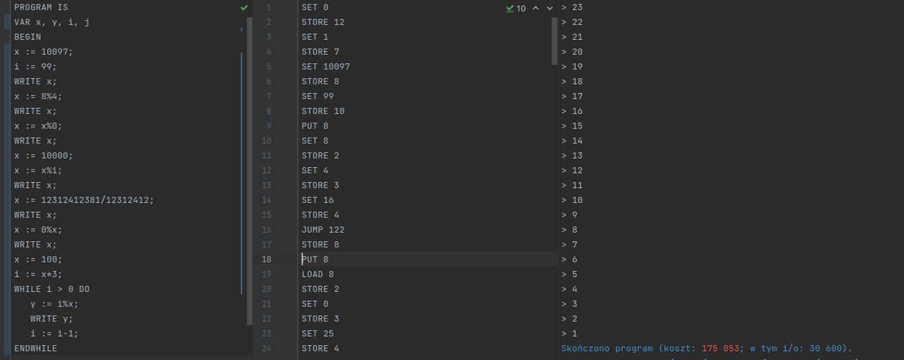
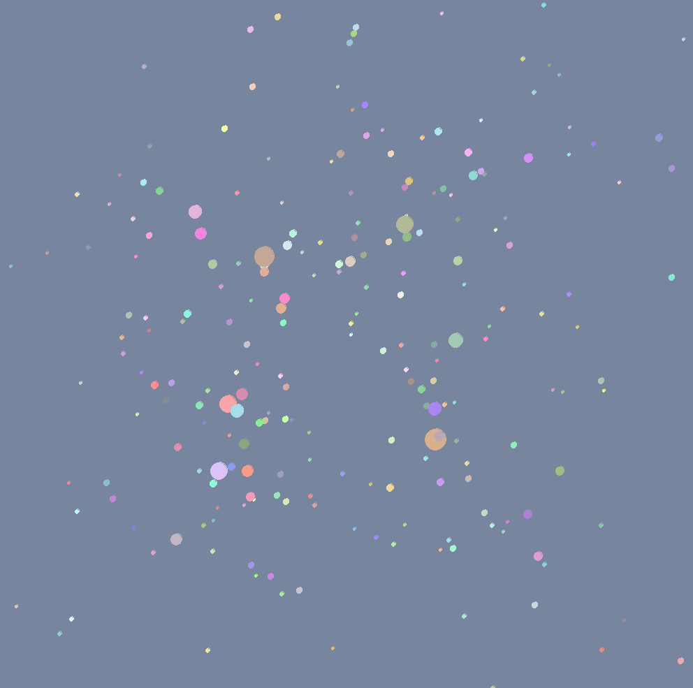

-
Lidar Perception System
As a part of PWR Racing Team student organization, I am responsible for autonomous system for our car. My biggest contribution to that project is a LIDAR-based perception that allows our car to localize itself on a track. LIDAR is a sensor that shots lasers and based on return timing and laser orientation it produces a point cloud. From that the system detects cones and assigns them a color. This is a multistep pipeline, and must be reliable as it will be the only way for a fast moving racing car to orientate itself in the terrain.

double_tuple acc{.0, .0, .0, .0, .0, .0, .0}; std::tie(x_1, x_2, x_3, x_4, yx_2, yx_1, y) = std::accumulate( Cone.points.cbegin(), Cone.points.cend(), acc, [](double_tuple acc, pcl::PointXYZI point) { double x = point.x; double y = point.y; double_tuple a{ std::get<0>(acc) + x, std::get<1>(acc) + x * x, std::get<2>(acc) + x * x * x, std::get<3>(acc) + x * x * x * x, std::get<4>(acc) + y * x * x, std::get<5>(acc) + y * x, std::get<6>(acc) + y}; return a; }); auto n = static_cast<double>(Cone.points.size()); -
Procedural Language compiler
On the 6th semester, the main project was to design and programme a compiler. This wasn't an easy task as it required immense ammount of theoretical knowledge combined with non trivial programming skills. I choosed the approach to precompile code to abstract syntax tree with blocks representing specific commands, like "for" loops and "if" statements. This allowed me to optimise my code without much sacrifice in terms of time efficiency. I used C++17, bison and flex. Code example is a program linker that translates etiquets to code addresses This project was graded by competition where fastest and most compact compiled code, compared to other students, was given more points. I placed 8th, and achieved grade of 5.
void Compiler::translate_tags() { int i = 0; for (auto line = main_code.begin(); line != main_code.end(); line++, i++) { std::string tag_msg; while ((*line)[0] == '&') { _tag_map[*line] = i; std::string tag = (*line).substr(1); tag_msg += " [ ^" + tag + " ] "; line = main_code.erase(line); } line->append(compiler_log(tag_msg, 4)); } for (auto line = main_code.begin(); line != main_code.end(); line++, i++) { auto index_start = (*line).find("&"); if (index_start != std::string::npos) { auto line_from_tag = (*line).substr(index_start); auto tag = line_from_tag.substr(0, line_from_tag.find(" ")); auto tag_line = _tag_map[tag]; line->erase(index_start); line->append(std::to_string(tag_line) + compiler_log(" [ JUMP ^" + tag.substr(1) + " ] ", 4)); } } } -
N-body simulation
As a summer project I decided to build a n-body simulation. This is a computational heavy task that simulates behaviour of bodies under gravity field induced by themselves. For rendering I used sdl library that is commonly used for game developement. To speed up the computations, I implemented quad trees that limited ammount of objects that i had to compute relations for. This limited computational complexity to O(nlog(n)) from O(n^2).
class quadTree{ public: Node* root; std::vector